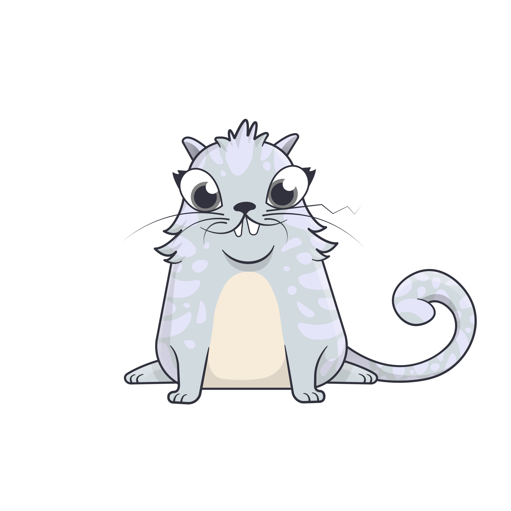
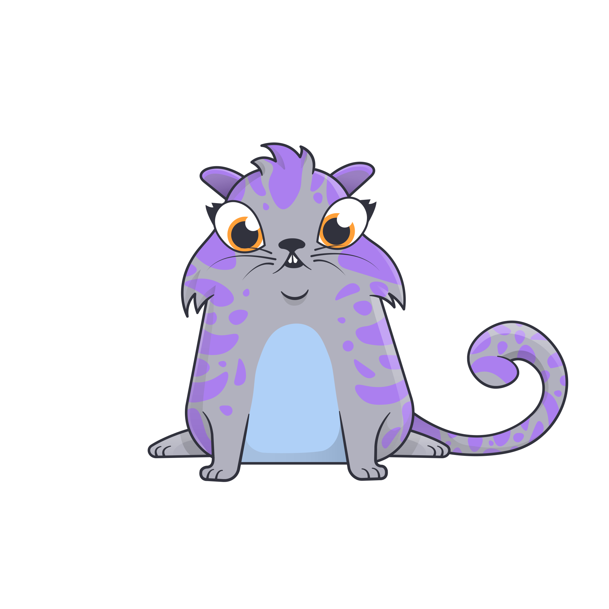

Original
# Kitties created:
0
, Gas used:
0
, Gas remaining:
0

Picolo
# Kitties created:
0
, Gas used:
0
, Gas remaining:
0

Select network:
local
ropsten
Enter gas units:
Start
Images are taken from cryptokitties website